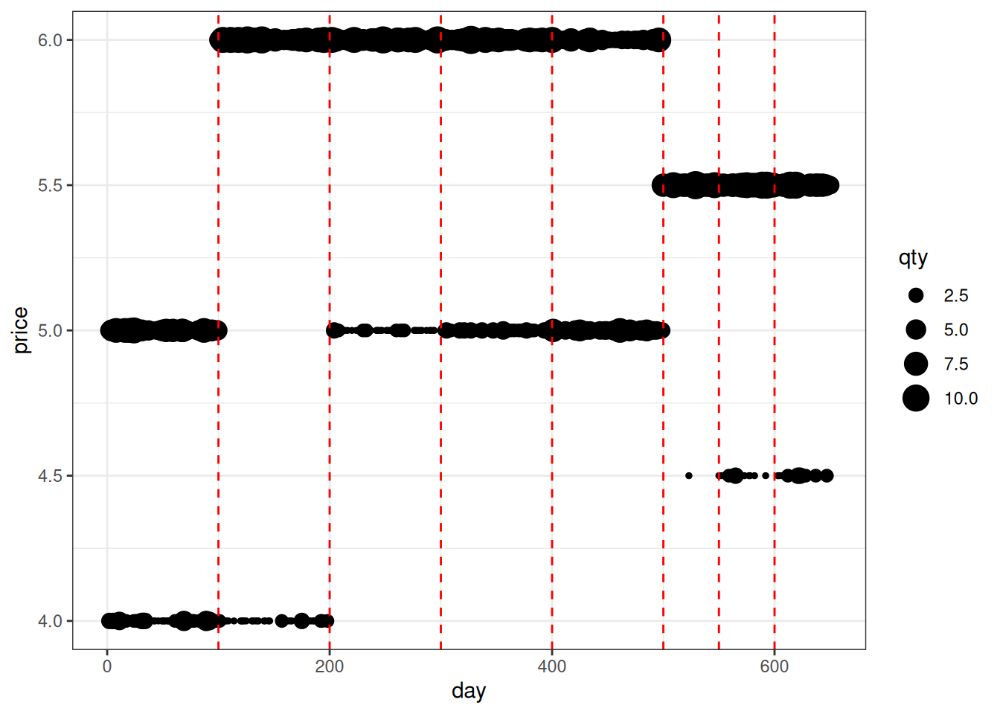
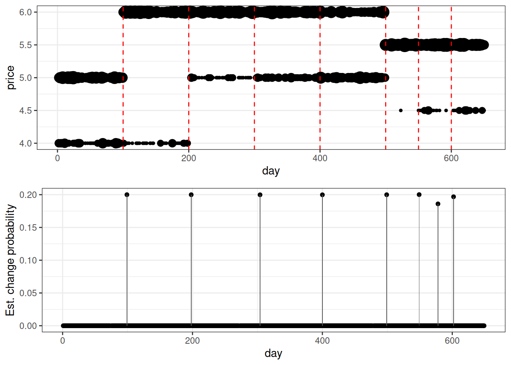
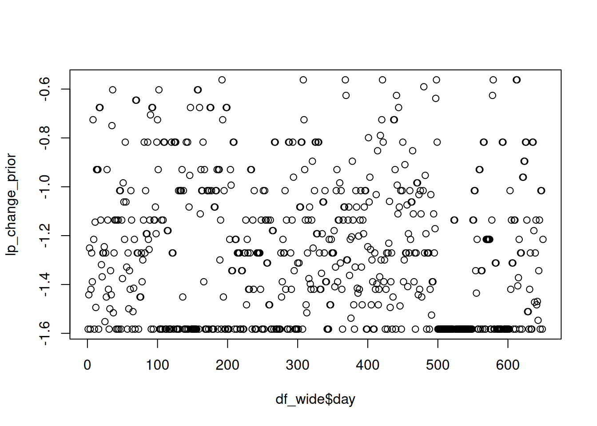

Code
# Load required libraries
library(tidyverse)
library(magrittr)
library(cmdstanr)This notebook presents a Bayesian changepoint detection model applied to synthetic sales data, where product prices change over time. The goal is to detect structural changes in pricing behavior based on price histograms over time when the pricing of a product undergoes a meaningful shift — such as promotions, list price changes, or changes in the availability of discounts.
The model determines that based on daily price histograms (i.e., distributions of sold units across different price points). The model is implemented in Stan and designed to serve as a modular component within larger hierarchical models for retail analytics.
The model marginalizes over all possible segmentations of the time series, using a dynamic programming algorithm to recursively compute the total marginal likelihood across all changepoint configurations. It is well-suited for integration in hierarchical settings where multiple products or locations share changepoint structure. This is especially useful when you want to detect coordinated changes across multiple products or stores.
We define:
This model addresses the problem of detecting changepoints in price histograms over time — points where the pricing behavior of a product undergoes a meaningful shift (e.g., due to promotion, repricing, or competitor reaction).
Instead of trying to detect changepoints deterministically or estimating their positions directly, the model marginalizes over all possible segmentations. It does this by:
This setup avoids sampling discrete changepoint positions and is designed to be embedded in a larger hierarchical model. For example, one can later use a common prior across products or sites and detect simultaneous price changes across products.
This method is particularly useful in retail pricing, where:
This model detects changepoints in a time series of price histograms by marginalizing over all possible segmentations in a Bayesian framework.
After each time point \(k \in {1, \ldots, T-1}\), the model assumes that the current price regime either continues or changes. When a regime change occurs after point \(k\) (\(z_k=1\)), we expect the price distribution to differ meaningfully from the previous one. This difference is governed by a prior over change magnitudes, parameterized by \(\theta\). Because Stan does not support discrete latent variables, we analytically marginalize over the binary regime change indicators \(z_1:T-1\), and expresses the model directly in terms of \(\pi_1:T-1\), the parameters governing the probability of a regime change between each pair of time points.
In the complete theoretical model, we would model the distributions associated with the different pricing regimes. However, in practice, doing so requires the estimation of an additional \(T \cdot (T-1)/2 \cdot N\) parameters, where \(T\) is the number of data points, and \(N\) is the number of price points overall. The computational cost of this number of parameters appears prohibitively expensive, which is why the present model is simplified in two points:
The model’s components:
The posterior is given by:
\[ \underbrace{ p(\pi_{1:T-1}, \theta \mid \mathbf{y}_{1:T}) }_{\textbf{Posterior}} \propto \underbrace{ p( \pi_{1:T-1} ) }_{ \text{Changepoint prior} } \cdot \underbrace{ p( \theta ) }_{ \text{Prior on change magnitude} } \cdot \underbrace{ p( \mathbf{y}_{1:T} \mid \pi_{1:T-1}, \theta ) }_{ \substack{ \text{ Marginal likelihood } \\ \text{ (multinomial segments, regime-change-weighted) } } } \]
The likelihood term integrates over all possible binary changepoint sequences consistent with the per-day probabilities \(\\pi_k\), weighting each segmentation path by its segment likelihood and its compatibility with the prior over change magnitudes.
This model estimates changepoints in time-series histogram data by marginalizing over all possible segmentations using a Bayesian framework. The posterior has three main components, each of which is described below.
\[ \underbrace{ p(\pi_{1:T-1}, \theta_{1:T} \mid \mathbf{y}_{1:T}) }_{Posterior} \propto \underbrace{ p( \pi_{1:T-1}) }_{\text{Changepoint prob. prior} } \cdot \underbrace{ p( \mathbf{y}_{1:T} \mid \pi_{1:T-1}, \theta_{1:T} ) }_{\text{Marginal likelihood}} \cdot \underbrace{ p( \theta_{1:T} ) }_{\text{Prior on the change magnitude}} \]
\[ p(\boldsymbol{\pi}) = \prod_{t=2}^{T} \text{Beta}(\pi_t \mid \alpha, \beta) \]
This prior controls the expected segmentation complexity, preferring longer segments unless data suggests otherwise.
The marginal likelihood component:
\[ p(\mathbf{y}_{1:T} \mid \boldsymbol{\pi}, \mu_{\text{chg}}, \sigma_{\text{chg}}) \]
is evaluated by marginalizing over all possible segmentations of the data into contiguous time intervals.
For every segment \([t_1, t_2]\), we compute:
\[ \ell_{t_1, t_2} = \log p(\mathbf{y}_{t_1:t_2}) \]
These are stored in a matrix of size \(T \times T\), and computed from: - Poisson or multinomial models of the observed histograms - Or another domain-specific scoring rule
Only the upper triangle (i.e., \(t_1 \leq t_2\)) is valid.
Let \(L_t\) be the log marginal likelihood of all paths ending at time \(t\). Then:
\[ L_{t_2} = \log \sum_{t_1=1}^{t_2-1} \exp \left[ L_{t_1} + \log \pi_{t_1} + \log (1 - \pi_{t_1+1})^{(t_2 - t_1 - 1)} + \ell_{t_1, t_2 - 1} + \log p(\delta_{t_2-1} \mid \mu_{\text{chg}}, \sigma_{\text{chg}}) \right] \]
We initialize with:
\[ L_1 = 0 \]
and compute forward to ( L_{T+1} ), which becomes the total marginal log-likelihood over all segmentation paths. This is added to the Stan target.
We define a change magnitude at each \(t = 2, \dots, T\):
\[ \delta_t = \left| \mathbb{E}[p_t] - \mathbb{E}[p_{t-1}] \right| \]
This is computed deterministically from the histogram of price bins on each day:
We place a Gaussian prior on these magnitudes:
\[ \delta_t \sim \mathcal{N}(\mu_{\text{chg}}, \sigma_{\text{chg}}) \]
with hyperpriors:
\[ \mu_{\text{chg}} \sim \mathcal{N}(0, 0.5), \quad \sigma_{\text{chg}} \sim \text{Exponential}(1) \]
This introduces flexibility to favor larger or smaller changes in response to domain-specific expectations.
\[ \begin{aligned} \log p(\boldsymbol{\pi}, \mu_{\text{chg}}, \sigma_{\text{chg}} \mid \mathbf{y}_{1:T}) &= \sum_{t=2}^{T} \log \text{Beta}(\pi_t \mid 1, 5) \\ &+ \log \mathcal{N}(\mu_{\text{chg}} \mid 0, 0.5) + \log \text{Exp}(\sigma_{\text{chg}} \mid 1) \\ &+ \sum_{t=2}^{T} \log \mathcal{N}(\delta_t \mid \mu_{\text{chg}}, \sigma_{\text{chg}}) \\ &+ \text{Marginal Log-Likelihood via DP} \end{aligned} \]
When you click the Render button a document will be generated that includes both content and the output of embedded code. You can embed code like this:
# Load required libraries
library(tidyverse)
library(magrittr)
library(cmdstanr)# Fix the random seed for reproducibility
set.seed(123)
# Define number of observations, expected average transaction volume, and the number of days to simulate
n_days <- 650
lambda_qty <- 5
days <- 1:n_days
# Specify a sequence of price regimes with distinct list prices, discounts, and discount probabilities
segments <- data.frame(
start_day = c(1, 100, 200, 300, 400, 500, 550, 600),
list_price = c(5, 6, 6, 6, 6, 5.5, 5.5, 5.5),
discount_price = c(4, 4, 5, 5, 5, 4.5, 4.5, 4.5),
discount_probability = c(.25, .1, .1, .25, .5, .01, .05, .15)
)
# Map each day to its corresponding pricing regime
segment_id <- findInterval(days, segments$start_day)
# Generate a synthetic transactional record with total quantity and price assignment
df <- data.frame(
day = days,
list_price = segments$list_price[segment_id],
discount_price = segments$discount_price[segment_id],
discount_probability = segments$discount_probability[segment_id],
qty_total = rpois(n_days, lambda_qty)
) %>%
mutate(
qty_discount = rbinom(n_days, qty_total, discount_probability),
qty_list_price = qty_total - qty_discount
) %>%
select(-discount_probability, -qty_total) %>%
pivot_longer(
cols = starts_with("qty_"),
names_to = "type",
values_to = "qty"
) %>%
mutate(
price = if_else(type == "qty_discount", discount_price, list_price)
) %>%
select(day, price, qty)# Visualize the synthetic price trajectories over time.
# Bubble size reflects quantity sold; red dashed lines denote predefined changepoints.
p_price <- df %>%
filter(qty > 0) %>%
ggplot(aes(day, price)) +
geom_point(aes(size=qty)) +
theme_bw() +
geom_vline(xintercept = segments$start_day[-1], color = "red", linetype = "dashed")
print(p_price)
# Aggregate total daily quantities and remove days with no transactions.
df_nonzero <- df %>%
mutate( total_qty = sum(qty), .by = "day" ) %>%
filter(total_qty > 0) %>%
select(-total_qty)
# Reshape the cleaned transactional data into a price-by-day matrix format.
# Each row corresponds to a day; each column to a discretized price point.
df_wide <- df_nonzero %>%
pivot_wider(names_from = "price", values_from = "qty", values_fill = 0)
# Convert to a numeric matrix and enforce price column ordering.
histogram_qty <- as.matrix(df_wide[,-1])
price_points <- as.numeric(colnames(histogram_qty))
histogram_qty <- histogram_qty[,order(price_points)]
price_points %<>% sort()
# Structure data for Stan input as a list of matrix and metadata dimensions.
data_stan <- list(
n_time_points = nrow(histogram_qty),
n_price_points = ncol(histogram_qty),
histogram = histogram_qty,
price_points = price_points
)# Compile the custom Stan model for changepoint marginal likelihood computation
model <- cmdstan_model("./changepoint_marginal_simple.stan")
# Perform optimization-based inference to obtain MAP estimates
opt <- model$optimize(
data = data_stan,
seed = 123
)Initial log joint probability = -4329.75
Iter log prob ||dx|| ||grad|| alpha alpha0 # evals Notes
67 -1399.24 139.121 0.0032305 1 1 79
Optimization terminated normally:
Convergence detected: relative gradient magnitude is below tolerance
Finished in 12.2 seconds.# Extract the estimated changepoint probabilities from the Stan model output
cp_probs <- opt$summary("cp_probs") %>% .$estimate %>% c(., NA)
# Associate each time point (day) with its corresponding estimated changepoint probability
df_estimates <- data.frame( day = df_wide$day, cp_probs = cp_probs ) %>% filter(!is.na(cp_probs))
# Visualize the changepoint probabilities over time using both point and bar representation
p_cp <- df_estimates %>%
ggplot(aes(x=day, y=cp_probs)) +
geom_point() + geom_bar(stat="identity") +
theme_bw() +
xlab("day") + ylab("Est. change probability")# Combine price plot and changepoint probability plot into a vertically stacked layout
# This facilitates visual comparison between observed pricing patterns and inferred changepoints
ggpubr::ggarrange(p_price + theme(legend.position = "none"), p_cp, ncol = 1)
lp_change_prior <- opt$summary("lp_change_prior") %>% .$estimate
plot(df_wide$day, lp_change_prior)